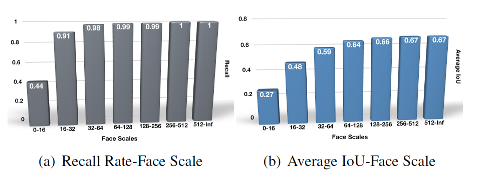
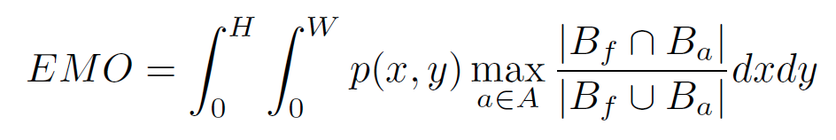
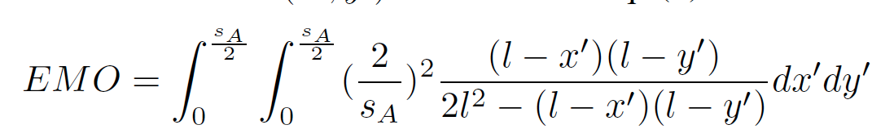
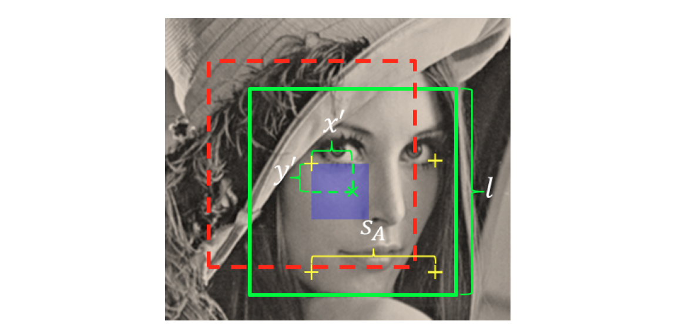
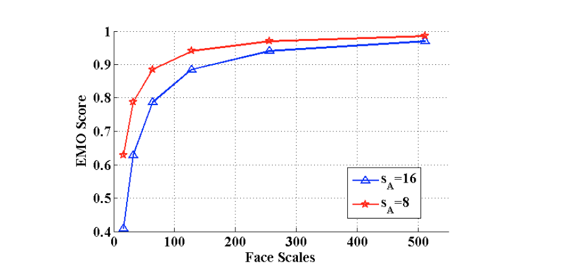
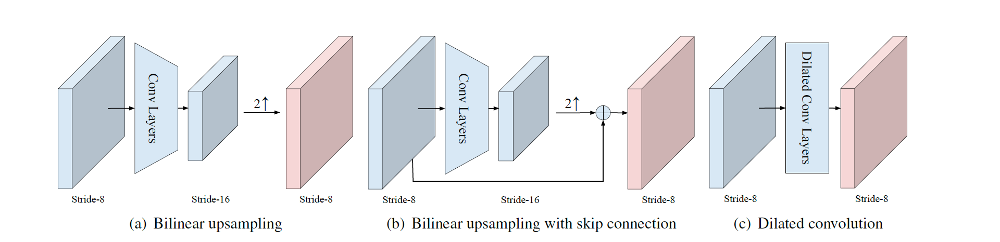
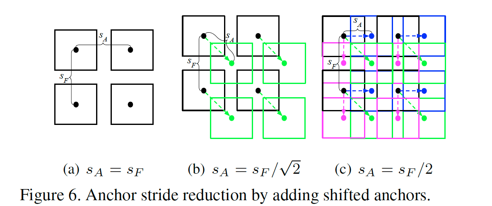
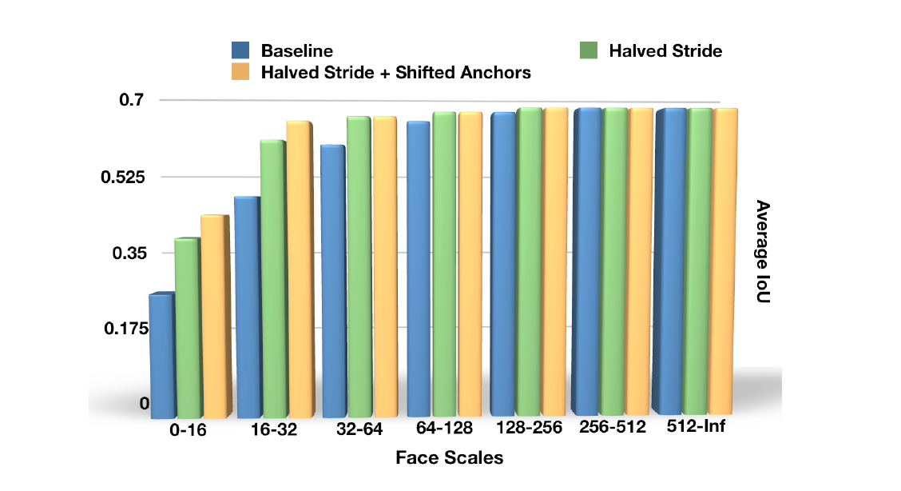
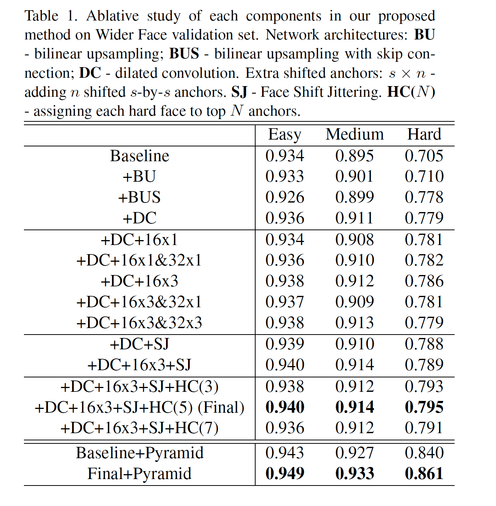
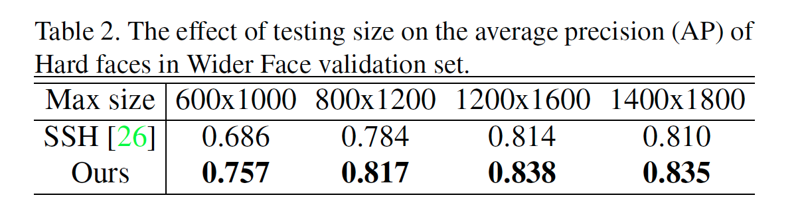

Seeing Small Faces from Robust Anchor’s Perspective
URL:https://arxiv.org/pdf/1802.09058.pdf
这篇论文是关于anchor的设计，论文提出了一些anchor设计的策略来检测小脸。下图(a)是作者统计的传统基于anchor的模型在不同人脸大小下的recall，下图(b)则是作者将所有的人脸按大小分组，然后计算每一个组里每张人脸与anchor的最大IoU，对group中所有的max IoU取均值就是图(b)的average IoU。通过统计分析作者认为之所以对于小脸recall比较低的情况是因为小脸和初始化的anchor IoU较小，因此论文提出EMO Score来评估gt和anchor之间的联系并提出了一些anchor设计的策略。

- Expected Max Overlapping Scores（EMO）：（x，y）是人脸中心的坐标，H，W分别是图片的高宽，p（x , y）则是概率密度函数，后半部分则是max IoU的计算，EMO描述的是一个anchor可以match到一个face的期望。

作者以下图为例，假设人脸(中心为x)和左上角的anchor（中心为 +）拥有最大的IoU，那么人脸中心的取值范围就是图示的x’、y’小矩形，假设anchor中心的stride为Sa那么x’= y’= Sa / 2， 取anchor大小为lxl所以EMO:

右下图则给出了公式中变量Sa、l的曲线图，l越大EMO越大、Sa越小EMO越大


根据EMO的分析，论文提出了一些anchor设计的策略： - Stride Reduction with Enlarged Feature Maps：减小anchor 的stride Sa和增大feature map的scale是等价的，因为它们与原图的关系是一致的。论文给出了三种增大feature map scale的网络结构，分别是Bilinear Upsampling、Bilinear Upsampling with Skip Connetction以及空洞卷积，upsampling的实现则是利用deconv layer。
 - Extra Shifted Anchors：通过增加辅助的anchor来降低Sa，下图(a)是目前的基本anchor设计，图(b)是在原来对角anchor的中心加入辅助anchor，从而得到Sa ^2 = Sf ^2 / 2,图(c)则是在b的基础上在水平、竖直两个anchor的中点再加入两组辅助anchor将Sa降到原来的一半。

最后的效果：
 - Face Shift Jittering：在训练过程中每一次迭代都随机移动图片中的人脸（整张图片平移，对应的脸也相应平移），以此来增加某一些小脸和anchor的IoU。
- Hard Face Compensation：max IoU始终低于阈值的人脸被称为hard faces，对于每一个hard face则按照IoU从大到小依次取前N个anchor作为positive（论文中通过实验取N为5）。
最后的实验效果：

在不同图片大小上的表现：

本博客所有文章除特别声明外，均采用 CC BY-NC-SA 4.0 许可协议。转载请注明来自 Out of Memory！